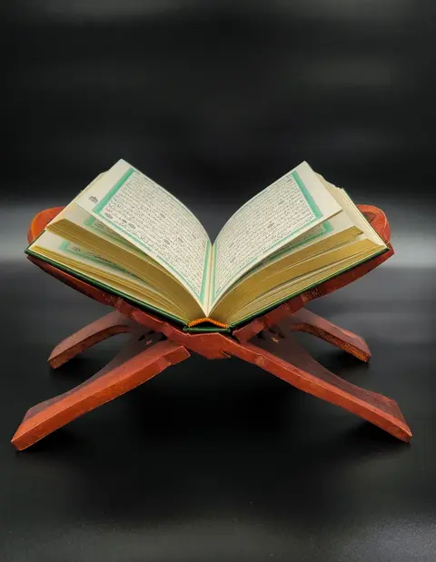

Halaman uji sementara — hanya untuk persetujuan, akan dihapus.
Fondasi seni: palet, keffiyeh, semangka, bingkai lengkung, foto stok
Tambahkan ?bandingkan di alamat untuk melihat halaman ini di lebar 1440 dan 390 berdampingan.
1 · Palet semangka-keffiyeh × logo
Hijau = Arab & identitas, biru = Inggris, merah = aksen hangat & blok besar, hitam + putih = keffiyeh, kunyit = hanya tombol aksi.
logo & kulit muda semangka · dekor saja
teks Arab · blok hijau
Inggris
dekor, judul sangat besar
teks merah · blok merah ber-teks
tombol aksi saja
Latar fase (jauh lebih halus)
2 · Kain keffiyeh — .orn-kain
Jaring (bawaan) dan kotak houndstooth (.orn-kain--kotak), tiga warna: .kain-hitam, .kain-merah, .kain-hijau.
jaring · hitam-putih
jaring · merah-putih
jaring · hijau-putih
kotak · hitam-putih
kotak · merah-putih
kotak · hijau-putih
Pita pembatas — .orn-band--tebal / --sempit
Berulang tanpa sambungan. Tinggi 24–48px lewat --pita.
Dua terbawah: pita putih di atas blok merah tua dan hitam (contoh pembatas tebal).
Tekstur latar tipis — .orn-net.orn-net--kain
Tepi bingkai — .orn-bingkai
3 · Semangka geometris — .orn-slice, .orn-seeds
Datar, tanpa gradasi, tanpa wajah. Gulir pelan: irisan berayun kecil / "terbuka" mengikuti scroll (diam bila gerak dikurangi).
Kiri & kanan menjorok keluar tepi (--jorok). Tengah: .orn-slice--buka. Latar: sebaran biji 10%.
4 · Bingkai lengkung + 5 · foto stok (sementara)
.frame-arch = lengkung bulat (arkade Al-Aqsa), .frame-arch--lancip = mihrab. Garis ganda mengikuti warna teks (color). Semua foto Pexels — lihat assets/photos/CREDITS.md.
Fase malam (tetap gelap)
Teks lembut, biru Inggris, hijau Arab (= hijau logo), kunyit.
kain terbalik di malam
